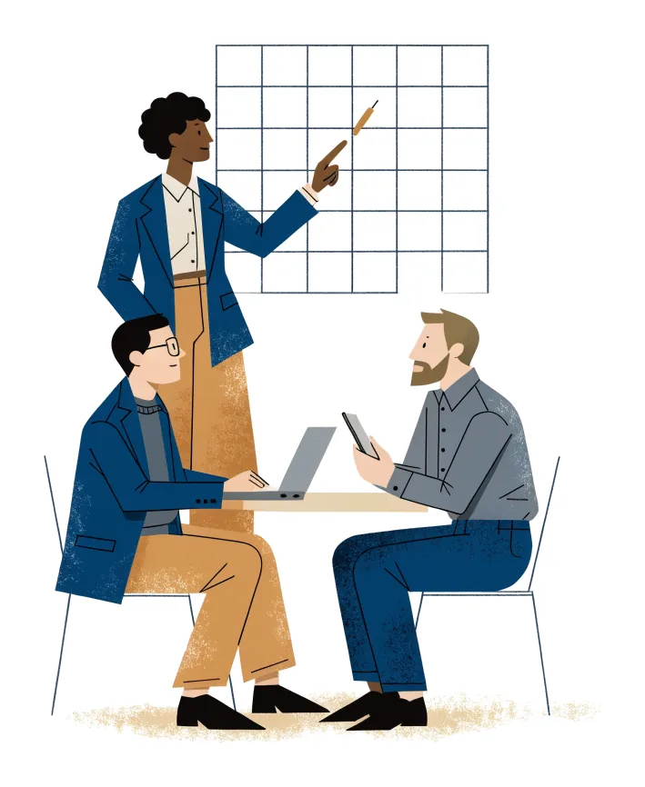
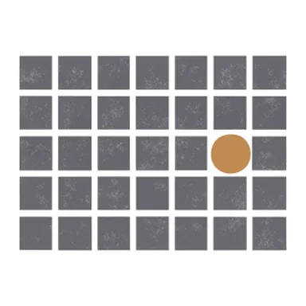
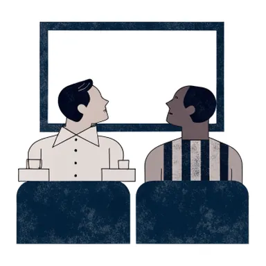
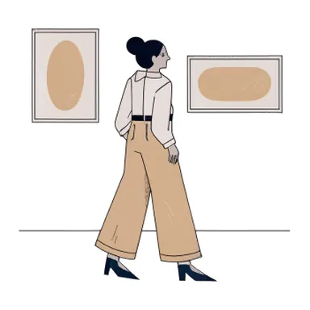
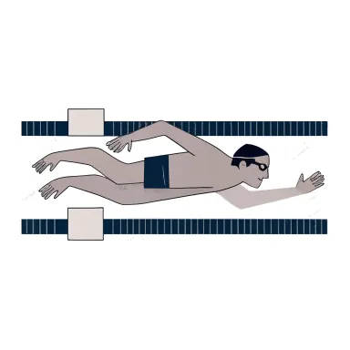

배우기 전에 먼저 해 보세요. 틀려도 괜찮아요.
'저는 내일 일해야 해요'는 어떻게 말할까요?
müssen이 두 번째 자리에 오고, 동사 원형은 문장 맨 끝에 와요.
친구가 Hast du am Freitag Zeit?이라고 물었어요. 그날 안 될 때 가장 알맞은 대답은 무엇일까요?
거절할 때는 leider를 붙이고 이유를 말하면 부드러워요.

독일 생활은 약속으로 굴러가요. 친구를 만날 때도, 회의를 잡을 때도, 병원에 갈 때도 먼저 시간을 정해요. Jiu는 Lena와 주말 약속을 잡고, Dohyun은 회의 시간을 바꾸고, Sora는 병원에 전화해서 예약해요.
문법 können, müssen, wollen, Satzklammer, am, um, von … bis
과제대학어학원 사무실에 상담 시간 예약하기
과제직장회의 시간을 정하고 일정 바꾸기
이 과를 마치면 약속을 제안하고 정하고, 전화로 예약하고 미룰 수 있어요. 할 수 있는 일과 해야 하는 일도 말할 수 있어요.
이 과에서 쓸 말이에요. 눌러서 먼저 들어 보세요.
배우기 전에 먼저 해 보세요. 틀려도 괜찮아요.
'저는 내일 일해야 해요'는 어떻게 말할까요?
müssen이 두 번째 자리에 오고, 동사 원형은 문장 맨 끝에 와요.
친구가 Hast du am Freitag Zeit?이라고 물었어요. 그날 안 될 때 가장 알맞은 대답은 무엇일까요?
거절할 때는 leider를 붙이고 이유를 말하면 부드러워요.
Lektion 5의 낱말 다섯 개를 다시 떠올려 보세요.
수요일 저녁, WG 부엌이에요. Lena가 Jiu에게 주말에 같이 할 일을 제안해요.
들으면서 찾아보세요. 두 사람은 토요일 몇 시에 만나기로 하나요?
월요일 오전, 사무실이에요. Dohyun이 Frau Hoffmann에게 회의 시간을 바꿔 달라고 부탁해요.
들으면서 찾아보세요. 회의는 언제로 바뀌나요?
화요일 아침이에요. Sora가 병원에 전화해서 딸 Hana의 진료를 예약해요.
들으면서 찾아보세요. 예약은 무슨 요일 몇 시인가요?
세 대화를 듣고 답하세요.
Jiu는 왜 금요일 저녁에 영화를 보러 갈 수 없나요?
Am Samstagvormittag muss Jiu einkaufen.
Jiu와 Lena는 토요일 세 시에 무엇을 하나요?
Dohyun kann am Dienstag um zehn kommen.
화요일에는 고객을 방문해야 해요.
회의는 언제로 바뀌었나요?
Markus will auch kommen.
Sora는 누구의 진료를 예약하나요?
Hana의 진료는 언제인가요?
halb vier는 15시 30분이에요.
낱말 44개예요. 낱말이나 예문 앞의 단추를 누르면 소리가 나요. 명사는 der, die, das를 색으로 구분했어요.
der Termin, die Termine 약속, 예약 (정해진 시간)
Ich habe um zehn einen Termin.열 시에 약속이 있어요.
die Zeit 시간
Hast du am Samstag Zeit?토요일에 시간 있어요?

der Kalender, die Kalender 달력, 일정표
Ist der Termin im Kalender?그 약속이 일정표에 있어요?
die Praxis, die Praxen 개인 병원, 의원
Die Praxis hat am Mittwoch keinen Termin frei.그 병원은 수요일에 빈 시간이 없어요.
der Arzttermin, die Arzttermine 진료 예약
Ich habe morgen einen Arzttermin.내일 병원 예약이 있어요.
die Sprechstunde, die Sprechstunden 상담 시간, 진료 시간
Die Sprechstunde ist von neun bis zwölf.상담 시간은 아홉 시부터 열두 시까지예요.
die Beratung, die Beratungen 상담
Ich brauche einen Termin für eine Beratung.상담 예약이 필요해요.
der Kunde, die Kunden 고객 (남자)
Dohyun muss einen Kunden besuchen.Dohyun은 고객을 방문해야 해요.
die Kundin, die Kundinnen 고객 (여자)
Die Kundin kommt um elf.그 고객은 열한 시에 와요.
der Raum, die Räume 방, 회의실
Die Besprechung ist in Raum drei.회의는 3번 회의실에서 해요.
der Test, die Tests 시험, 테스트
Am Montag haben wir einen Test.월요일에 시험이 있어요.

das Kino, die Kinos 영화관
Wir gehen am Freitag ins Kino.우리는 금요일에 영화 보러 가요.

das Museum, die Museen 박물관, 미술관
Am Samstag gehen wir ins Museum.토요일에 박물관에 가요.
die Versichertenkarte, die Versichertenkarten 건강 보험 카드
Sie müssen die Versichertenkarte mitbringen.건강 보험 카드를 가져오셔야 해요.
die Minute, die Minuten 분
Ich komme zehn Minuten später.10분 늦게 가요.
können (du kannst, er kann) ~할 수 있다
Ich kann am Nachmittag kommen.저는 오후에 올 수 있어요.
müssen (du musst, er muss) ~해야 한다
Ich muss am Freitag lernen.금요일에는 공부해야 해요.
wollen (du willst, er will) ~하려고 하다
Lena will ins Kino gehen.Lena는 영화 보러 가려고 해요.
vereinbaren (약속을) 정하다, 예약하다
Ich möchte einen Termin vereinbaren.예약을 하고 싶어요.
verschieben 미루다, 옮기다
Können wir den Termin verschieben?일정을 옮길 수 있을까요?
absagen 취소하다
Ich muss den Termin leider absagen.아쉽지만 약속을 취소해야 해요.
mitbringen 가져오다
Kannst du den Kuchen mitbringen?케이크를 가져올 수 있어요?
besuchen 방문하다, 찾아가다
Am Sonntag besuche ich meine Freundin.일요일에 친구를 찾아가요.
treffen (du triffst, er trifft) 만나다
Ich treffe Lena um drei.저는 세 시에 Lena를 만나요.
fragen 묻다
Ich muss Markus fragen.Markus에게 물어봐야 해요.

schwimmen 수영하다
Ich kann nicht gut schwimmen.저는 수영을 잘 못해요.
spielen 놀다, (운동이나 악기를) 하다
Am Sonntag spielen wir Fußball.일요일에 우리는 축구를 해요.
bleiben 머무르다
Heute bleibe ich zu Hause.오늘은 집에 있어요.
warten 기다리다
Sie müssen zehn Minuten warten.10분 기다리셔야 해요.
telefonieren 전화로 이야기하다
Können wir morgen telefonieren?내일 통화할 수 있을까요?
Zeit haben 시간이 있다
Am Nachmittag habe ich Zeit.오후에는 시간이 있어요.
frei 비어 있는, 쉬는
Am Freitag habe ich frei.금요일에는 쉬어요.
gern 기꺼이, 즐겨
Kommst du mit? – Ja, gern!같이 갈래요? – 네, 좋아요!
natürlich 물론
Ja, natürlich.네, 물론이죠.
vielleicht 아마, 어쩌면
Vielleicht kann ich am Sonntag.일요일에는 될지도 몰라요.
schade 아쉬운
Du kannst nicht kommen? Schade!못 와요? 아쉽네요!
Das geht. 돼요, 괜찮아요
Um halb vier? Ja, das geht.세 시 반이요? 네, 돼요.
Das geht leider nicht. 아쉽지만 안 돼요
Am Dienstag? Das geht leider nicht.화요일이요? 아쉽지만 안 돼요.
pünktlich 제시간에, 시간을 잘 지키는
Ich komme immer pünktlich.저는 항상 제시간에 와요.
zu spät 너무 늦은, 늦게
Entschuldigung, ich komme zu spät.죄송해요, 늦었어요.
wichtig 중요한
Der Termin ist sehr wichtig.그 약속은 아주 중요해요.
heute Abend 오늘 저녁
Hast du heute Abend Zeit?오늘 저녁에 시간 있어요?
übermorgen 모레
Übermorgen habe ich einen Arzttermin.모레 병원 예약이 있어요.
nächste Woche 다음 주
Nächste Woche habe ich viele Termine.다음 주에는 약속이 많아요.
이 과의 낱말로 여덟 문제를 풀어요.
줄을 누르면 소리가 나요. 요일과 하루의 때 앞에는 am, 시각 앞에는 um을 써요. heute, morgen, übermorgen, nächste Woche 앞에는 아무것도 붙이지 않아요.
규칙
können은 할 수 있는 일과 가능한 일, müssen은 꼭 해야 하는 일, wollen은 하려고 마음먹은 일을 말해요. 세 동사 모두 ich와 er, sie의 모양이 같고 끝에 -e나 -t가 붙지 않아요. ich, du, er, sie에서는 모음도 바뀌어요.
| können | müssen | wollen | |
|---|---|---|---|
| ich | kann | muss | will |
| du | kannst | musst | willst |
| er, sie | kann | muss | will |
| wir | können | müssen | wollen |
| ihr | könnt | müsst | wollt |
| sie, Sie | können | müssen | wollen |
주의 Ich will einen Termin.은 가게나 병원에서 쓰면 딱딱하고 무례하게 들려요. 부탁하거나 주문할 때는 4과에서 배운 möchten을 써요. Ich möchte einen Termin vereinbaren. wollen은 내 계획을 말할 때 써요. 같이 하자고 제안할 때는 Wollen wir …?(우리 …할까요?)라고 해요.
규칙을 보고 바로 확인해 보세요.
ich와 er, sie가 주어일 때 können은 어떤 모양인가요?
규칙
조동사는 주어에 맞게 바뀌어 두 번째 자리에 오고, 하려는 일을 나타내는 동사는 원형 그대로 문장 맨 끝에 와요. 두 동사가 문장을 괄호처럼 감싸서 Satzklammer(문장 괄호)라고 해요. 네, 아니요로 답하는 질문에서는 조동사가 맨 앞에 와요.
| 1 | 2 조동사 | 가운데 | 끝 원형 |
|---|---|---|---|
| Ich | muss | am Freitag | lernen. |
| Am Samstag | kann | ich | kommen. |
| Wir | wollen | ins Kino | gehen. |
| Wann | können | Sie | kommen? |
| Sie | müssen | die Karte | mitbringen. |
주의 5과의 분리동사는 조동사와 함께 쓰면 갈라지지 않고 원형 그대로 끝에 와요. Ich stehe um sechs auf. → Ich muss um sechs aufstehen. 부정하는 nicht는 원형 앞에 와요. Ich kann nicht kommen. 영어처럼 원형을 조동사 바로 뒤에 붙여서 Ich muss lernen am Freitag.라고 하지 않아요.
규칙을 보고 바로 확인해 보세요.
조동사가 있는 문장에서 동사 원형은 어디에 오나요?
규칙
요일과 하루의 때 앞에는 am, 시각 앞에는 um을 써요. 시작과 끝은 von … bis로 말해요. heute, morgen, übermorgen, nächste Woche 앞에는 아무것도 붙이지 않아요.
| 물음 | 대답 | 쓰는 곳 |
|---|---|---|
| Wann? | am Montag, am Abend | 요일, 하루의 때 |
| Um wie viel Uhr? | um drei, um halb vier | 시각 |
| Von wann bis wann? | von neun bis zwölf | 시작과 끝 |
| Wann? | heute, morgen | 앞에 아무것도 없음 |
주의 밤만 am을 쓰지 않고 in der Nacht라고 해요. 때를 나타내는 말이 문장 맨 앞에 오면 동사가 바로 뒤에 오고 주어는 그 뒤로 가요. Am Samstag kann ich kommen.
규칙을 보고 바로 확인해 보세요.
요일 앞에는 무엇을 쓰나요?
듣고 알맞은 것을 고르세요.
Lena는 일요일에 무엇을 하려고 하나요?
Ich will am Sonntag schwimmen gehen. Kommst du mit?
Markus는 왜 목요일에 안 되나요?
Am Donnerstag kann ich leider nicht. Ich muss bis sieben arbeiten.
예약은 언제인가요?
Sie können am Montag um elf Uhr fünfzehn kommen.
Dohyun은 회의를 언제 하고 싶어 하나요?
Können wir die Besprechung am Freitag machen? Am Donnerstag kann ich nicht.
Sora가 다음 주 일정을 이야기해요. 듣고 알맞은 것을 고르세요. Bürgeramt는 전입 신고 같은 일을 보는 관청이에요.
Soras Woche
Sora Nächste Woche habe ich viele Termine. Am Montag habe ich um neun einen Termin mit Hanas Lehrerin.
Sora Am Mittwoch um zehn habe ich einen Termin im Bürgeramt. Da kann ich nicht im Deutschkurs sein.
Sora Am Donnerstag um halb vier hat Hana einen Arzttermin. Und am Freitag habe ich keinen Termin. Da will ich lange schlafen!
Sora는 월요일 아홉 시에 누구를 만나나요?
수요일 약속은 어디에서 있나요?
Sora는 금요일에 무엇을 하려고 하나요?
어학원 사무실 문에 붙은 안내문을 읽고, 맞으면 richtig, 틀리면 falsch를 고르세요. Sprechzeiten은 상담 시간, geschlossen은 문을 닫는다는 뜻이에요.
Kursbüro: Sprechzeiten
| Vormittag | Nachmittag | |
|---|---|---|
| Mo | 9–12 Uhr | 14–16 Uhr |
| Di | 9–12 Uhr | geschlossen |
| Mi | geschlossen | 14–18 Uhr |
| Do | 9–12 Uhr | 14–16 Uhr |
| Fr | 9–13 Uhr | geschlossen |
Bitte beachten
Beratung nur mit Termin. Einen Termin können Sie am Telefon vereinbaren: 069 90009-210. Sie können auch eine E-Mail schreiben: kursbuero@example.org
Sie können nicht kommen? Dann müssen Sie den Termin absagen.
Am Dienstagnachmittag ist das Kursbüro geschlossen.
Am Mittwoch können Sie um zehn Uhr kommen.
수요일 오전에는 문을 닫아요. 오후 14시부터 18시까지 열어요.
Am Freitag können Sie bis 13 Uhr kommen.
Für eine Beratung brauchen Sie einen Termin.
Einen Termin können Sie nur am Telefon vereinbaren.
이메일로도 예약할 수 있어요.
알맞은 조동사 형태를 고르세요.
Ich am Freitag leider nicht kommen.
du am Samstag?
Jiu am Wochenende lernen.
Wir ins Kino gehen.
Sie heute lange arbeiten?
Lena schwimmen gehen.
뜻에 맞는 조동사를 고르세요.
Ich habe morgen einen Test. Ich heute lernen.
내일 시험이 있어요. 오늘 공부해야 해요.
Am Samstag habe ich Zeit. Da ich kommen.
토요일에는 시간이 있어요. 그날은 올 수 있어요.
Lena hat am Freitag frei. Sie ins Kino gehen.
Lena는 금요일에 쉬어요. 영화 보러 가려고 해요.
Sie haben keinen Termin? Dann Sie leider warten.
예약이 없으세요? 그럼 아쉽지만 기다리셔야 해요.
Mein Deutsch ist noch nicht gut. Ich noch nicht gut telefonieren.
제 독일어는 아직 서툴러요. 전화 통화는 아직 잘 못해요.
낱말을 순서대로 눌러 문장을 만드세요.
저는 금요일에 공부해야 해요.
목요일에 오실 수 있어요?
우리는 박물관에 가려고 해요.
카드를 가져오셔야 해요.
저는 아쉽지만 올 수 없어요.
am과 um 가운데 알맞은 말을 고르세요.
Der Termin ist Donnerstag.
Die Besprechung fängt vierzehn Uhr an.
Nachmittag habe ich Zeit.
Wir treffen Lena halb vier.
Wochenende will ich lange schlafen.
분리동사를 조동사와 함께 써 보세요. 빈칸에 동사 원형을 쓰세요.
Ich stehe um sechs auf. → Ich muss um sechs .
Ich kaufe am Samstag ein. → Ich will am Samstag .
Ich rufe die Praxis an. → Ich muss die Praxis .
Kommst du mit? → Kannst du ?
어울리는 말끼리 짝지으세요.
빈칸에 알맞은 낱말을 쓰세요.
Hast du am Samstag ?
토요일에 시간 있어요?
Ich kann nicht kommen.
아쉽지만 올 수 없어요.
Um halb vier? Ja, das .
세 시 반이요? 네, 돼요.
Ich möchte einen Termin .
예약을 하고 싶어요.
듣고 그대로 써 보세요.
Hast du am Samstag Zeit? 토요일에 시간 있어요?
Können wir den Termin verschieben? 일정을 옮길 수 있을까요?
Ich möchte einen Termin vereinbaren. 예약을 하고 싶어요.
Hast du am Samstag Zeit? / Haben Sie am Montag Zeit? 토요일에 시간 있어요? / 월요일에 시간 있으세요?
Wollen wir ins Kino gehen? 우리 영화 보러 갈까요?
Kannst du am Freitag? 금요일에 돼요?
Ja, gern! 네, 좋아요!
Ja, das geht. 네, 돼요.
Um drei passt es gut. 세 시 좋아요.
Am Freitag kann ich leider nicht. 금요일에는 아쉽지만 안 돼요.
Ich muss arbeiten. 일해야 해요.
Geht es auch am Samstag? 토요일에도 돼요?
Schade! 아쉽네요!
Ich möchte einen Termin vereinbaren. 예약을 하고 싶어요.
Wann können Sie kommen? 언제 오실 수 있어요?
Haben Sie am Donnerstag einen Termin frei? 목요일에 빈 시간이 있어요?
Um wie viel Uhr? 몇 시에요?
Können wir den Termin verschieben? 일정을 옮길 수 있을까요?
Ich muss den Termin leider absagen. 아쉽지만 약속을 취소해야 해요.
Ich komme zehn Minuten später. 10분 늦게 가요.
Guten Tag, hier ist … 안녕하세요, …입니다.
Auf Wiederhören! 안녕히 계세요. (전화를 끊을 때)
과제 고르기
역할 대화와 말하기, 쓰기 과제는 대학 생활과 직장 생활 두 가지예요. 하나를 고르면 다음 과에서도 그쪽 과제가 나와요. 언제든 바꿀 수 있어요.
대화 A에서 역할을 하나 고르세요. 상대의 말은 음성으로 나오고, 내 차례에는 직접 말해요.
대화 B에서 역할을 하나 고르세요. 상대의 말은 음성으로 나오고, 내 차례에는 직접 말해요.
이번 주를 떠올리고 칸을 채우세요. 요일은 Montag, Freitag처럼 독일어로 적어요. 할 일은 arbeiten, lernen, einkaufen처럼 동사 원형으로 써요. 완성된 문장을 소리 내어 읽어 보세요.
Am Freitag muss ich lernen.
Am Freitag kann ich leider nicht.
Am Samstag habe ich Zeit.
Am Samstag will ich ins Kino gehen.
다음 단계 수업에 대해 상담을 받고 싶어요. 어학원 사무실에 전화해서 상담 시간을 예약해요.
화요일 오전에는 수업이 있어서 갈 수 없어요. 수요일 오후와 목요일 오후에는 갈 수 있어요.
어학원 사무실의 Frau Wagner에게 전화해서 상담 시간을 예약해요. 쪽지를 보고 답하세요. 직원의 말을 듣고 소리 내어 답한 뒤 예시 답과 비교해 보세요.
Kursbüro, Wagner, guten Tag! 어학원 사무실 Wagner입니다, 안녕하세요!
Guten Tag, hier ist Minji Choi. Ich möchte einen Termin für eine Beratung vereinbaren.
Gern, Frau Choi. Können Sie am Dienstag um zehn Uhr kommen? 네, Frau Choi. 화요일 열 시에 오실 수 있어요?
Am Dienstag kann ich leider nicht. Am Vormittag habe ich Unterricht.
Und am Mittwoch? Wir haben um 14.30 Uhr einen Termin frei. 그럼 수요일은요? 14시 30분에 빈 시간이 있어요.
Ja, das geht. Am Mittwochnachmittag habe ich Zeit.
Gut. Wie ist Ihre Telefonnummer? 좋아요. 전화번호가 어떻게 되세요?
Meine Nummer ist null, eins, sieben, sechs, null, vier, null, sechs, neun, null, fünf, fünf.
Danke. Also am Mittwoch um 14.30 Uhr. Auf Wiederhören! 감사합니다. 그럼 수요일 14시 30분입니다. 안녕히 계세요!
Vielen Dank! Bis Mittwoch. Auf Wiederhören!
Eine Nachricht an Lena
같이 사는 Lena가 금요일 저녁에 영화를 보러 가자고 메시지를 보냈어요. 금요일에는 갈 수 없어요. 이유를 말하고 다른 날을 제안하는 답장을 써 보세요. 네 문장이면 충분해요.
Hallo Lena, am Freitag kann ich leider nicht. Ich muss lernen. Am Montag haben wir einen Test. Hast du am Samstag Zeit? Wir können um sechs ins Kino gehen. Viele Grüße, Minji
다 쓴 뒤에 확인해 보세요.
팀 회의가 화요일 10시에 잡혀 있어요. 그런데 화요일 오전에 고객을 방문해야 해요.
수요일은 하루 종일 시간이 있고, 목요일은 오전에만 시간이 있어요.
팀장 Frau Hoffmann에게 회의 시간을 바꿔 달라고 부탁해요. 쪽지를 보고 답하세요. 팀장의 말을 듣고 소리 내어 답한 뒤 예시 답과 비교해 보세요.
Guten Morgen! Die Besprechung ist am Dienstag um zehn Uhr. Können Sie kommen? 좋은 아침이에요! 회의는 화요일 열 시예요. 오실 수 있어요?
Am Dienstag kann ich leider nicht. Ich muss einen Kunden besuchen. Können wir den Termin verschieben?
Ja, das geht. Wann haben Sie Zeit? 네, 돼요. 언제 시간이 있으세요?
Am Mittwoch habe ich Zeit. Am Donnerstag kann ich nur am Vormittag.
Dann am Mittwoch. Können Sie um neun Uhr? 그럼 수요일로 해요. 아홉 시에 되세요?
Ja, um neun Uhr passt es gut.
Gut. Können Sie Markus eine E-Mail schreiben? 좋아요. Markus에게 이메일을 써 주실 수 있어요?
Ja, natürlich. Ich schreibe Markus heute eine E-Mail.
Vielen Dank! Bis Mittwoch. 감사합니다! 수요일에 봬요.
Bis Mittwoch, Frau Hoffmann!
Eine E-Mail an Markus
회의 시간이 바뀌었어요. 동료 Markus에게 새 일정을 알리는 짧은 메일을 써 보세요. 네 문장이면 충분해요.
Hallo Markus, am Dienstag kann ich leider nicht kommen. Ich muss einen Kunden besuchen. Die Besprechung ist jetzt am Mittwoch um neun Uhr in Raum drei. Kannst du am Mittwoch kommen? Viele Grüße, Minji
다 쓴 뒤에 확인해 보세요.
Ich kann einen Vorschlag machen und einen Termin vereinbaren.약속을 제안하고 정할 수 있어요.
Ich kann am Telefon einen Termin vereinbaren.전화로 예약할 수 있어요.
Ich kann einen Termin verschieben oder absagen.약속을 미루거나 취소할 수 있어요.
Ich kann sagen, was ich kann, muss und will.할 수 있는 일, 해야 하는 일, 하려는 일을 말할 수 있어요.